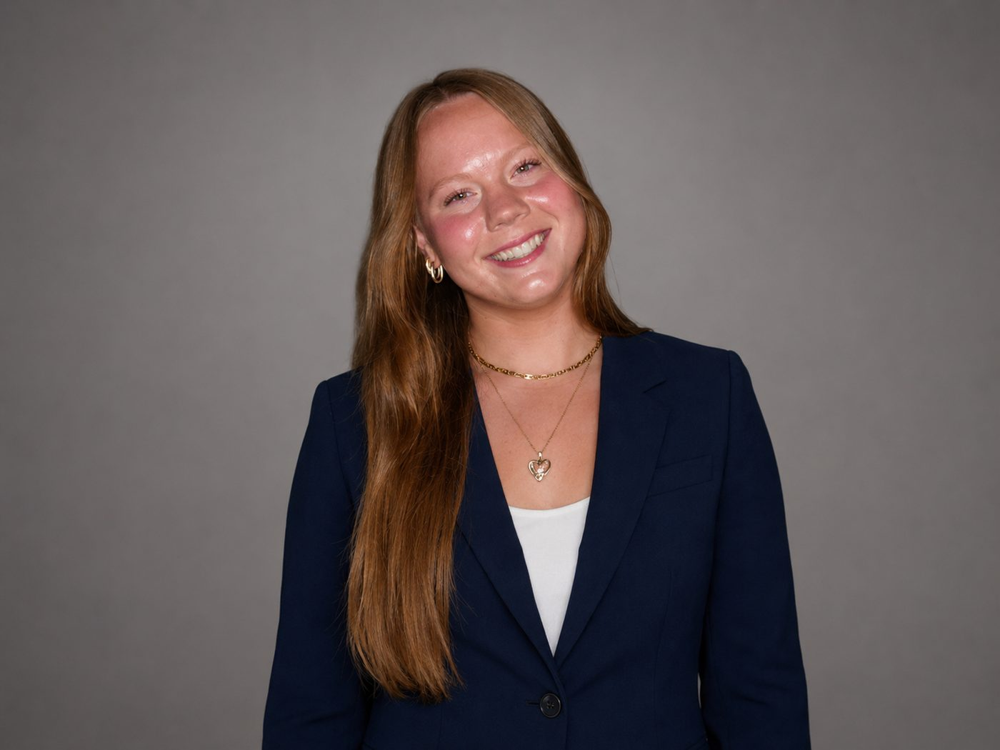
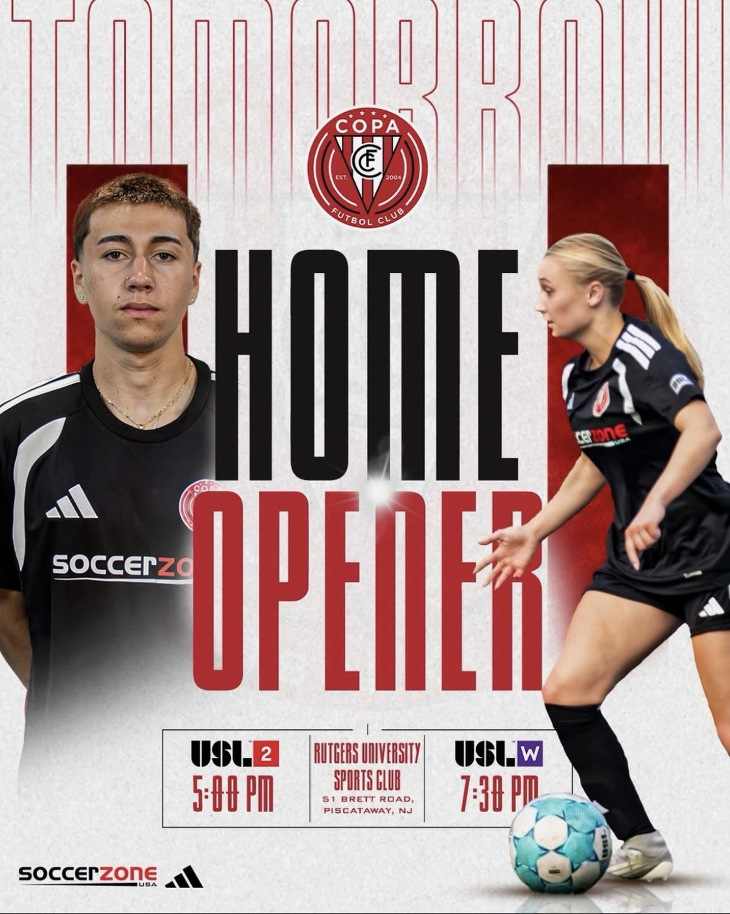
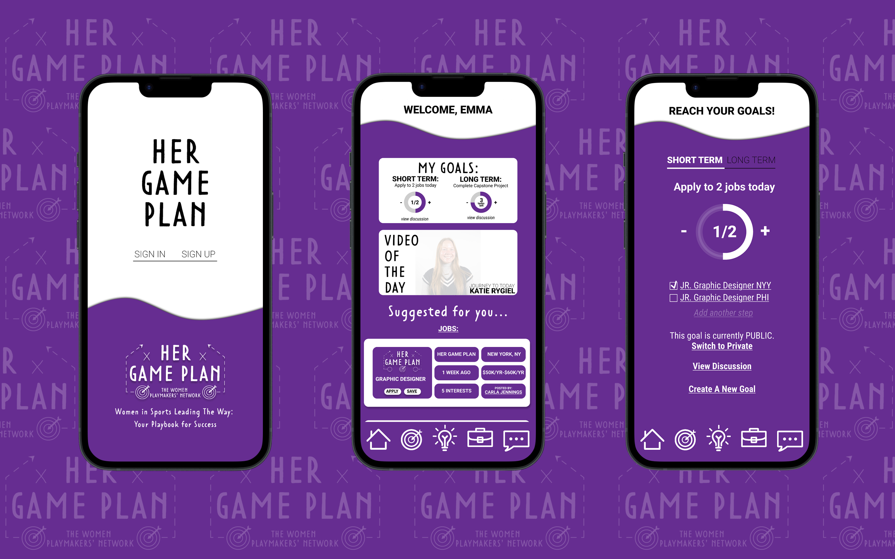
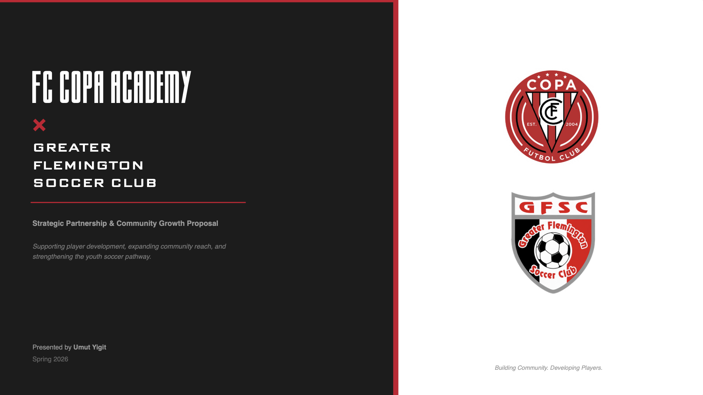
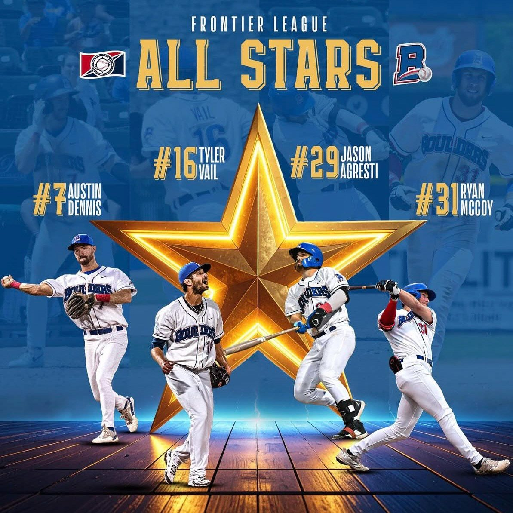
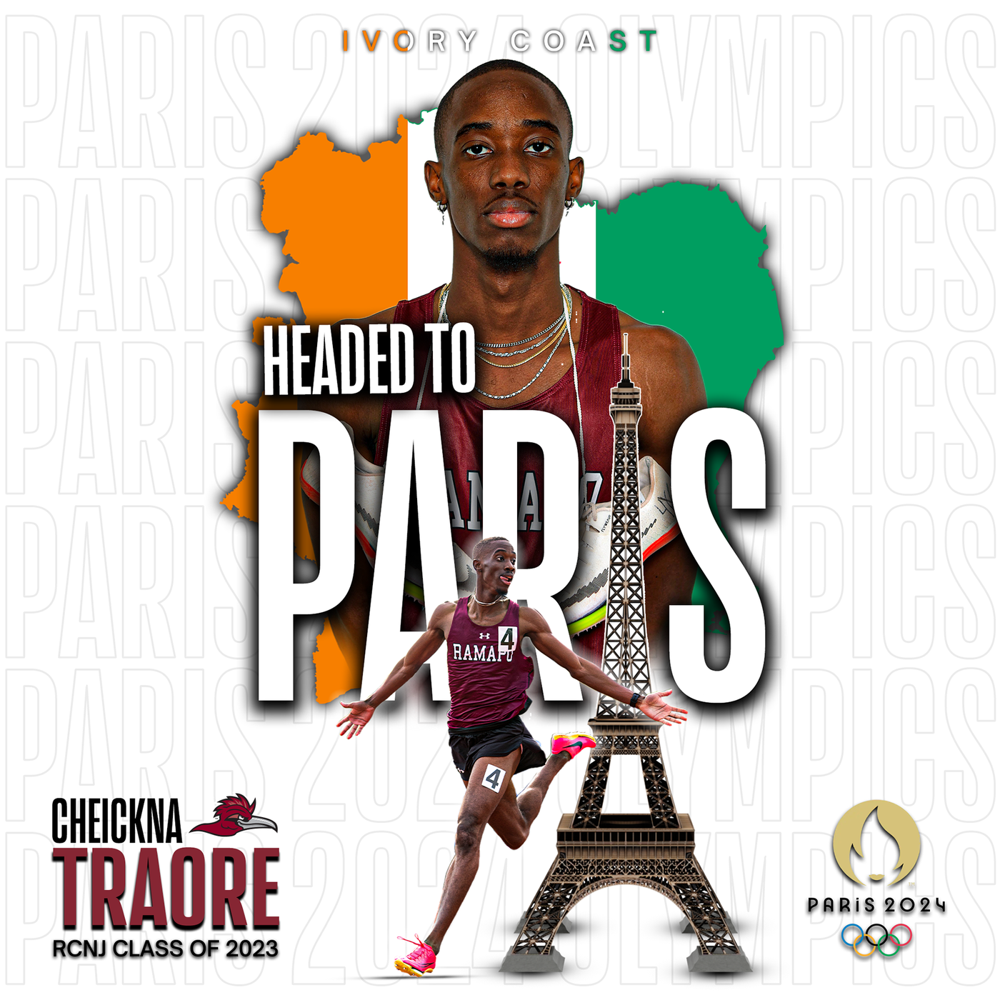
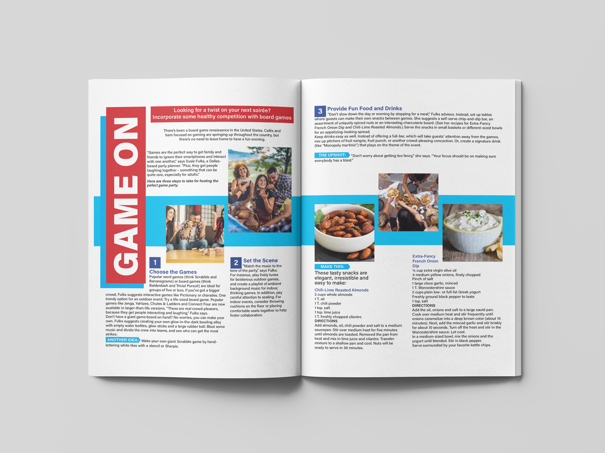

I create graphics, campaigns, and digital content for sports organizations and businesses, combining creative design with practical marketing experience.

I'm Katie, a graphic designer and digital marketer with a background in competitive athletics. My experience in sports has given me an appreciation for the creativity, planning, and quick decisions that go into producing content people want to see.
I currently manage creative and digital content for FC Copa Academy and Performance Sports Center. My work includes graphic design, photography, video, social media, email marketing, and campaign development.
Previously, I worked with the New York Boulders and Ramapo College Athletics, creating content for professional and collegiate sports.
While much of my experience has been in athletics, my interests and skills extend into branding, marketing, print design, and other creative work. I enjoy projects that allow me to combine strong visuals with clear communication.
A collection of professional and independent projects in graphic design, digital content, branding, and marketing.






I'm currently open to full-time opportunities in graphic design, digital content, creative marketing, and related roles. Based in New Jersey and open to remote, hybrid, and relocation opportunities.